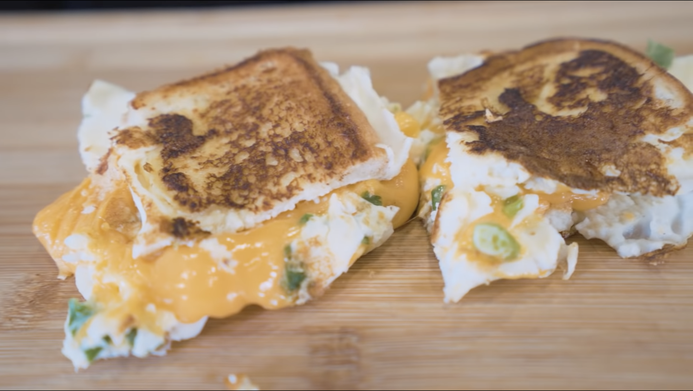

Egg and Cheese Sammy

Jump start your morning!
This egg and cheese sandwich is the perfect way to start your morning. It is so simple to make,
with egg whites, cheese, and bread being it's only 3 core ingredients. The perfect recipe for if you
are in a rush in the morning and want a quick and nutritious breakfast.
This recipe is low in carbs, low in calories, low in fat, and low cost! The macros in this meal are so
insane, you won't believe it!
Ingredients
- 1 piece white bread
- (Optional) Zero calorie butter spray
- 184g liquid egg whites
- 56g fat free cheddar
- (Optional) Green onions
Steps
- Get a piece of white bread and cut it down the middle in half
- (Optional) Hit each side of both halves of bread with the zero calorie butter spray
- Measure out 184g of liquid egg whites in a measuring cup. (Optional) Add salt to flavor
- Measure out 56g of fat free cheddar
- Preheat skillet to medium high heat and spray with non-stick spray
- Pour in egg whites, place two halves of bread in the skillet, facing away from each other.
Give them a little bath and move them towards the middle.
- (Optional) Sprinkle green onions on the eggs
- Once eggs are cooked, flip everything and fold egg onto the bread
- Spread cheese on top and fold it in half
- Let cheese melt for a couple minutes then fold sandwich and wait a couple minutes
Nutrition
- Calories: 237
- Fat: 1g
- Protein: 40g
- Carbs: 17g